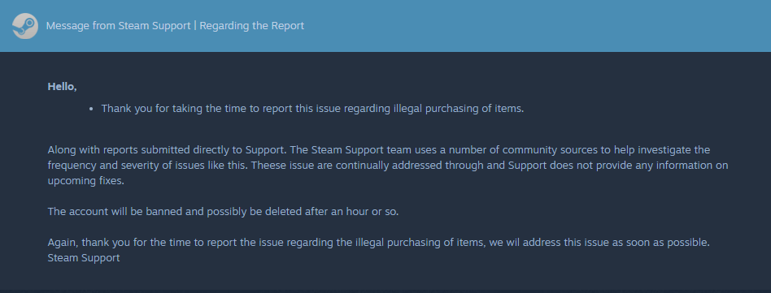

I just want to ask if this. is your steam account or not cause I got a problem.
Supposedly, I was going to report a dude that was buying the items I listed on the market because I didn't get anything from him/her on the steam market and I thought it was you since you have the same profile, I think that crooked dude is impersonating you
the dude impersonate you and that's why I accidentally reported you for doing illegal purchasing instead of someone else, I messaged the Steam admin and they said that your account will be suspended
did steam give you a notification about the scam report on your account?
I'm really sorry, I tried to tell them that the steam profile was mistakenly reported and that I did not intend to report you but they won't listen to me
I'm extremely nervous and anxious right now. Please help me to fix this issue before its too late or our accounts might be suspended or we could have a corresponding ban
I've saved the profile of the respondent. They want you to add their discord for you to explain this issue here:
help me explain to him that the report i made is just an accident and you're innocent
add him now and explain to him I accidentally reported you for doing illegal purchases instead of someone else.
just he can notice you right away thats why i messaged you immediately so you can help me to sort this out